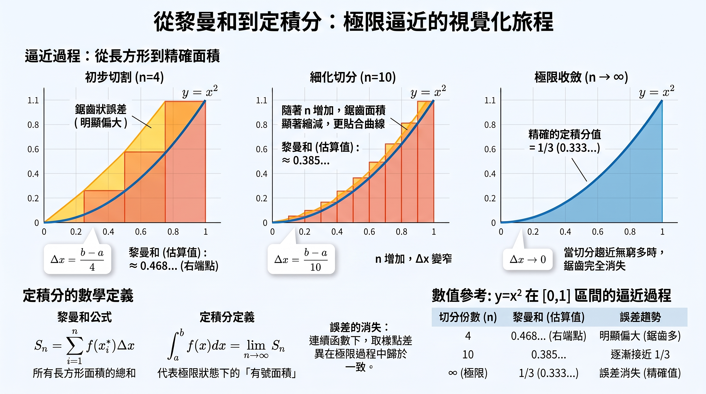

從黎曼和到定積分
中五 M2 學習報告｜馬Sir教室
無需 VPN
可嵌入 Google Sites
公式需連網載入（KaTeX）
1導言
如果要你計算一條不規則曲線下方的面積，你會怎麼做？在古代，人們必須把圖形切成成千上萬個細小的長方形來逼近真實面積。但只要找到一個「神奇函數」（原函數），竟然連一個長方形都不用畫，就能精準算出答案。這就是微積分中最偉大的橋梁——微積分基本定理。本課帶你一窺這個化繁為簡的世界。
學習目標
- 理解定積分的本質：說明定積分如何作為黎曼和在分割無限細分時的極限。
- 掌握微積分基本定理（FTC）：運用原函數快速求定積分，並理解為何不必加上常數 \(C\)。
- 辨析幾何面積與有號面積：區分兩者意義，並能處理被積函數小於零的情況。
- 善用對稱性簡化計算：利用奇函數與偶函數，簡化對稱區間上的定積分。
2黎曼和：用長方形拼湊出曲線面積
如何精確測量像 \(y = x^2\) 這樣的曲線，在區間 \([0, 1]\) 下方與 \(x\) 軸圍成的面積？
把區間等分成 \(n\) 個小區間，每個寬度 \(\Delta x = \dfrac{b-a}{n}\)。在每個小區間取樣點 \(x_i^*\)，以 \(f(x_i^*)\) 作長方形高度。把 \(n\) 個長方形面積加起來，就是黎曼和：
\[ S_n = \sum_{i=1}^{n} f(x_i^*) \Delta x \]
當 \(n \to \infty\)（此時 \(\Delta x \to 0\)），鋸齒會消失並貼合曲線。這個極限就是定積分的定義：
\[ \int_a^b f(x)\,dx = \lim_{n\to\infty}\sum_{i=1}^{n} f(x_i^*)\Delta x \]
想一想：無限細分時，全部用左端點或右端點，極限會不同嗎？答案是：只要函數在區間上連續，無論怎麼選樣點，都會收斂到同一個定積分值。

資訊圖：\(y=x^2\) 在 \([0,1]\) 由 \(n=4\) → \(n=10\) → \(n\to\infty\) 逼近 \(\frac{1}{3}\)
短片：黎曼和與極限（約 1 分 20 秒）
配音為普通話，畫面有繁中字幕；適合課堂引入或複習。
3有號面積：定積分不只是面積
日常生活中「面積」永遠是正數。但定積分代表的是有號面積（Signed Area）。
曲線在 \(x\) 軸上方時 \(f(x)>0\)，貢獻為正；在下方時 \(f(x)<0\)，貢獻為負。因此：
\[ \text{定積分} = (x\text{ 軸上方的面積}) - (x\text{ 軸下方的面積}) \]
例如 \(\displaystyle\int_{-1}^{1} x\,dx\)：左右兩塊三角形大小相等、符號相反，結果為 \(0\)。若問「總幾何面積」，則要算 \(\displaystyle\int_{-1}^{1}|x|\,dx = 1\)。
4微積分基本定理（FTC）
用極限定義硬算黎曼和很痛苦。FTC 指出：若 \(F'(x)=f(x)\)，則
\[ \int_a^b f(x)\,dx = \bigl[F(x)\bigr]_a^b = F(b)-F(a) \]
為什麼定積分不需要寫 \(+C\)？
不定積分要加常數 \(C\)。但定積分上下限相減時：
\[ \bigl(F(b)+C\bigr)-\bigl(F(a)+C\bigr)=F(b)-F(a) \]
常數 \(C\) 被抵消，所以計算定積分時一律不寫 \(+C\)。
實戰範例
求 \(\displaystyle\int_0^1 x^2\,dx\)。
原函數取 \(F(x)=\dfrac{x^3}{3}\)：
\[ \int_0^1 x^2\,dx = \left[\frac{x^3}{3}\right]_0^1 = \frac{1}{3}-0=\frac{1}{3} \]
這與黎曼和逼近得到的 \(0.333\ldots\) 吻合，但只需幾秒。
5進階技巧：代換法與對稱性
技巧一：定積分代換法
用 \(u=g(x)\) 代換時，必須同時更換上下限。當 \(x=a\) 時 \(u=g(a)\)；當 \(x=b\) 時 \(u=g(b)\)：
\[ \int_a^b f\bigl(g(x)\bigr)g'(x)\,dx = \int_{g(a)}^{g(b)} f(u)\,du \]
換完上下限後，不必再代回 \(x\)，直接用新的 \(u\) 上下限求值。
技巧二：對稱性（奇偶函數）
若積分區間為 \([-a,a]\)：
- 奇函數（\(f(-x)=-f(x)\)，如 \(x^3,\sin x\)）：\(\displaystyle\int_{-a}^{a}f(x)\,dx=0\)
- 偶函數（\(f(-x)=f(x)\)，如 \(x^2,\cos x\)）：\(\displaystyle\int_{-a}^{a}f(x)\,dx=2\int_0^a f(x)\,dx\)
小妙招：見到對稱區間（如 \([-\pi,\pi]\)），先檢查是否奇函數；是的話直接寫 \(0\)。
6總結
- 定義本質：定積分是黎曼和在 \(n\to\infty\)（\(\Delta x\to 0\)）時的極限。
- 有號面積：\(x\) 軸下方區域會對積分做出負貢獻。
- FTC：若 \(F'=f\)，則 \(\int_a^b f=F(b)-F(a)\)；常數 \(C\) 會抵消。
- 代換法：\(u\)-代換時上下限必須同步轉換。
- 奇偶對稱：\([-a,a]\) 上奇函數積分為 \(0\)；偶函數可化為 \(2\int_0^a\)。
講義 PDF（完整投影片）
Google Sites 嵌入時，瀏覽器通常會封鎖頁內 PDF 預覽。請用下面按鈕在新分頁開啟或下載。
直接開本站（非 Sites 嵌入）時，亦可在上方各節閱讀文字、看圖與播片。